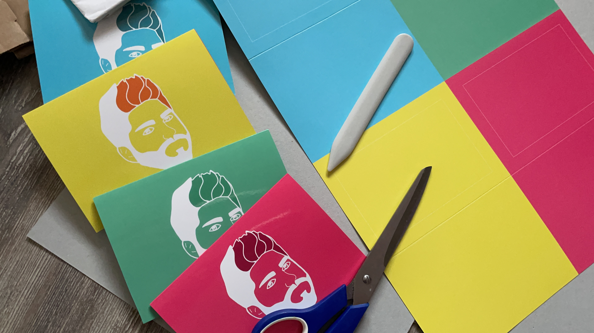

Talkshow-Spielformat
2021
Kamera: Anja Klose, Raphael Bader
Moderation: Pät Schreiber
Postproduktion (Trailer), Grafik, Druck & Game-Runner: Braelyn Mitrovic
Für die Talkshow von Pät Schreiber habe ich das Spiel "Hani scho" entwickelt. Die Fragen wurden nummeriert, wodurch die Dramaturgie des Spiels strategisch gesteuert konnte. Es wurde somit nichts dem Zufall überlassen.
Auch das Material für das Spiel habe ich from scratch gemacht: Die Grafik des Logos auf Illustrator, das Layout der Couverts auf Indesign, den Druckauftrag abwickeln und das Zusammenbasteln der Lieferung.